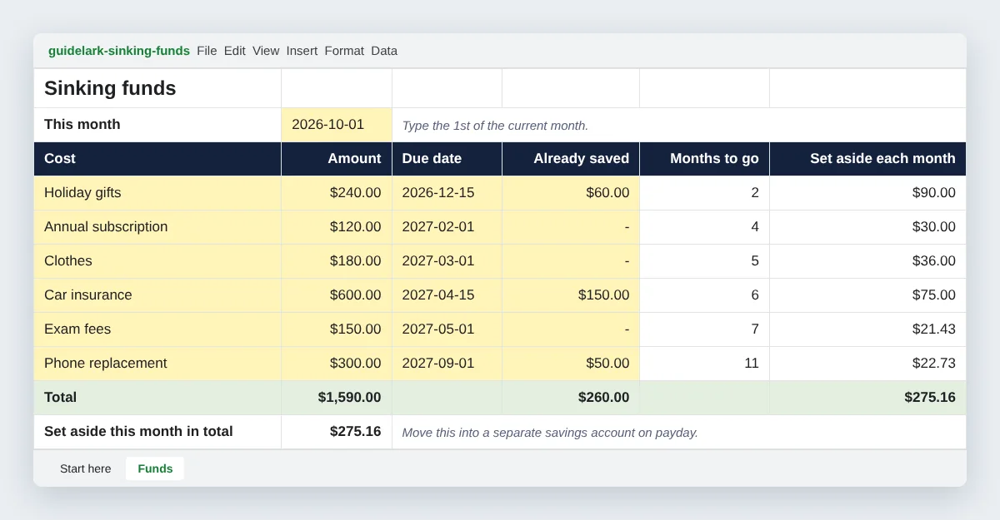

Sinking Funds Spreadsheet: Save for Costs That Aren't Monthly
A free sinking funds spreadsheet for Google Sheets and Excel that works out how much to set aside each month for every known cost, with a worked example.
Car insurance, holiday gifts, an annual subscription, exam fees. None of them are emergencies. You know they are coming, often to the day. Yet they wreck more budgets than real emergencies do, because they arrive in a month that has nothing set aside for them.
A sinking fund is the fix: you save a little each month for each known cost, so when the bill arrives, the money is already there. This free spreadsheet works out how much to put aside for each one.
Download the free sinking funds spreadsheet (.xlsx)
No sign-up and no email needed. It works in Google Sheets and Excel.

What is a sinking fund?
A sinking fund is money you set aside, bit by bit, for a cost you can see coming. The term comes from business, where companies put money aside to repay a debt over time.
It is different from an emergency fund:
| Sinking fund | Emergency fund | |
|---|---|---|
| For | Costs you know about | Costs you can't predict |
| Examples | Insurance, gifts, renewals, school fees, a phone you know is dying | Job loss, a medical bill, an urgent repair |
| Amount | The exact cost | A safety cushion |
| When you use it | On the due date, as planned | Only when something goes wrong |
Mixing them up is a common mistake. If you pay for holiday gifts out of your emergency fund, it is not there when the car breaks down. Our guide to building an emergency fund on a small income covers the other half of the picture.
What's inside the spreadsheet
| Tab | What it does |
|---|---|
| Start here | Five short steps |
| Funds | Up to twelve upcoming costs, each with its amount, due date and what you have saved, plus the monthly amount for each and the total |
Yellow cells are for you to type in. White cells calculate by themselves.
How to open it
Google Sheets: in Google Drive, choose New, then File upload, pick the file, double-click it, then choose File, then Save as Google Sheets.
Excel: download the file and open it.
How to fill it in
1. Type this month
At the top of the Funds tab, type the first day of the current month, such as 2026-10-01. The sheet counts months from here.
2. List every cost that isn't monthly
Go through last year's bank statements and your calendar. Look for:
- Yearly bills: insurance, subscriptions, memberships, licences, registration fees
- Seasonal costs: holiday gifts, birthdays, back-to-school, winter heating
- Things that wear out: phone, laptop, shoes, glasses, tyres
- One-offs you know about: exam fees, a wedding, a move, a trip
3. Add the amount, due date and anything already saved
For each cost, type how much it will be, the date you'll need the money, and anything you've already put aside.
4. Read the plan
The sheet shows Months to go for each cost and how much to Set aside each month. The total at the bottom is the one number to add to your budget.
5. Update once a month
When you move the money, add it to Already saved and change This month to the new month. The monthly amounts stay on track.
A worked example
Here are the six example costs, as of October 2026:
| Cost | Amount | Due | Already saved | Months to go | Each month |
|---|---|---|---|---|---|
| Holiday gifts | $240 | Dec 15, 2026 | $60 | 2 | $90.00 |
| Annual subscription | $120 | Feb 1, 2027 | $0 | 4 | $30.00 |
| Clothes | $180 | Mar 1, 2027 | $0 | 5 | $36.00 |
| Car insurance | $600 | Apr 15, 2027 | $150 | 6 | $75.00 |
| Exam fees | $150 | May 1, 2027 | $0 | 7 | $21.43 |
| Phone replacement | $300 | Sep 1, 2027 | $50 | 11 | $22.73 |
| Total | $1,590 | $260 | $275.16 |
Without a plan, December needs $240 for gifts and April needs $600 for insurance, on top of normal bills. With the plan, every month needs the same $275.16, and nothing is a shock.
$275 a month may be more than a small budget can carry. If so, look at the list again. Can the clothes budget shrink? Can the phone last another six months? Every change you make here is cheaper than a surprise on a credit card.
How the formulas work
- Months to go counts the calendar months from this month to the due month:
(YEAR(due) - YEAR(this month)) * 12 + MONTH(due) - MONTH(this month). If the due date is this month or has passed, it uses 1. - Set aside each month is the amount still missing divided by months to go:
MAX(0, amount - already saved) / months to go.
So a cost due in December, counted from October, has two months to go: you save in October and November, and the money is ready in December.
Where to keep the money
One separate savings account is enough for all your sinking funds. The spreadsheet tells you which part of the balance belongs to which cost. Move the monthly total on payday, so it never sits in your everyday account where it can be spent.
Some banks let you split one account into labelled "pots" or "spaces". If yours does, you can make one pot per cost. It is a nice extra, but not necessary.
Making room for sinking funds in your budget
Sinking funds belong in your budget as a single line. In the $950 budget from how to make a budget on less than $1,000 a month, that line is called irregular costs. In the free monthly budget template, you can rename one of the spare rows. If you follow the 50/30/20 rule, sinking funds for needs, like insurance, count as needs, and those for wants, like gifts, count as wants.
Frequently asked questions
Is the spreadsheet free? Yes. Download it, change it and share it.
What if I can't afford the total? Start with the costs that cause the most damage when missed, usually insurance, rent-related fees and anything with a penalty. Add the others as your budget allows.
What happens when I pay a cost? Delete its row, or change the due date to next year and set Already saved back to zero.
Is a sinking fund the same as a savings goal? Almost. A savings goal is usually something you want, like a laptop. A sinking fund is something you have to pay. If you want to track wants with progress bars, use the savings goal tracker.
This spreadsheet is general information, not financial advice. The example numbers are made up to show the format.